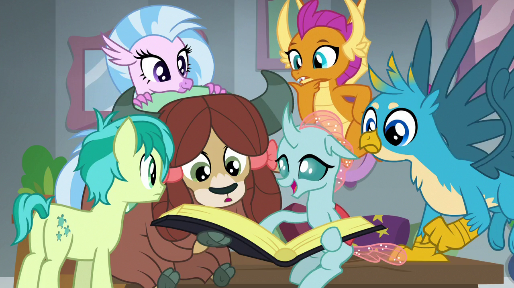

Dentro del mundo de Equestria, existen una gran diversidad de etnias o especies. Dentro de las clases sociales tenemos como el puesto mas alto a los ponies, luego le siguen las demas especies de equinos, como las cebras, burros y caballos. Luego encontramos las variaciones de los ponies como clase media por asi decirlo, y por ultimo las especies que no son ponies.
Dentro de los ponies podemos encontrar a los Unicornios, los Pegasos y los Ponies Terrestres. Segun las clases sociales se ubicarian en la clase alta los Unicornios ya que su magia ayudo a gran parte de su evolucion en el tiempo debido a su practicidas; en clase media tenemos a los Pegasos que controlan el clima y el cambio de estaciones de toda equestria; y en clase baja a los terrestres ya que fueron la clase trabajadora en agricultura y arquitectura. Aunque actualmente esto ya no se usa como referencia, pues se demostro que cualquier tipo de pony puede realizar estas tareas y las clases sociales se basan en la economia propia de cada uno.
Entre las variaciones de ponies podemos aprecias a los Ponies de Cristal del Imperio de cristal; A los Breezes que son una version Hada de los ponies; las Cebras que son como ponies africanos; las mulas que son conciderados como las personas sin hogar o que vive en los pantanos.